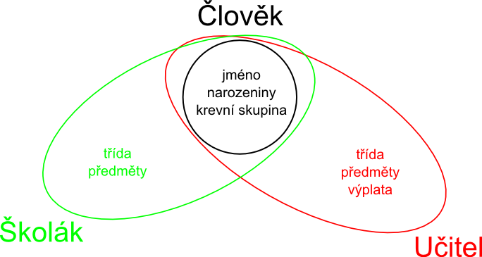

Objektové programování
by Jiří Znamenáček
Objekty v Python'u
V Python'u je objektem všechno. V prvním přiblížení to znamená, že cokoliv v Python'u „umí“ víc, než se na první pohled zdá. Příkladem budiž třeba „obyčejný” řetězec:
txt = "Ahoj, světe!"
txt.startswith('A') --> True
txt.startswith('a') --> False
txt.split() --> ['Ahoj,', 'světe!']
Jinými slovy: Prakticky všechno v Python'u má složitější vnitřní strukturu. Řetězec z příkladu výše tak není jenom „obyčejná” proměnná držící řetězcová data, ale ve skutečnosti složitá struktura, která s těmito řetězcovými daty umí navíc mnoha způsoby nakládat.
dir()
Jak moc složitá vnitřní struktura řetězce ve skutečnosti je, nám může prozradit vestavěná funkce dir(). Ta umožňuje jednoduše zjistit, na jaké dotazy umí příslušný objekt reagovat (formálněji jaké všechny tzv. atributy daný objekt má). U řetězce se jedná o následující množinu atributů:
['__add__', '__class__', '__contains__', '__delattr__', '__dir__', '__doc__',
'__eq__', '__format__', '__ge__', '__getattribute__', '__getitem__',
'__getnewargs__', '__gt__', '__hash__', '__init__', '__iter__', '__le__',
'__len__', '__lt__', '__mod__', '__mul__', '__ne__', '__new__', '__reduce__',
'__reduce_ex__', '__repr__', '__rmod__', '__rmul__', '__setattr__', '__sizeof__',
'__str__', '__subclasshook__', 'capitalize', 'casefold', 'center', 'count',
'encode', 'endswith', 'expandtabs', 'find', 'format', 'format_map', 'index',
'isalnum', 'isalpha', 'isdecimal', 'isdigit', 'isidentifier', 'islower',
'isnumeric', 'isprintable', 'isspace', 'istitle', 'isupper', 'join', 'ljust',
'lower', 'lstrip', 'maketrans', 'partition', 'replace', 'rfind', 'rindex',
'rjust', 'rpartition', 'rsplit', 'rstrip', 'split', 'splitlines', 'startswith',
'strip', 'swapcase', 'title', 'translate', 'upper', 'zfill']
Objekty neformálně ^_~
Vágně řečeno jsou tedy objekty jakési černé skříňky, kterých se můžeme přesně určeným způsobem na něco ptát („mačkat tlačítka na jejich povrchu“) a ony nám nějak odpoví (přičemž za odpověď se počítá i výjimka). Proč nám tak odpoví, už není naše starost (pokud jsme onen objekt ovšem nevytvářeli :).
PS: Příklad „špatného” dotazu, který způsobí výjimku:
txt.zacina_na('A') -->
AttributeError: 'str' object has no attribute 'zacina_na'
Cesta k objektům – moduly
Kromě vestavěných objektů v Python'u jsme se už ale setkali i s trochu podobnými strukturami, jmenovitě moduly. Například:
import sys print( sys.path ) sys.exit()
Jakákoliv proměnná nebo funkce (které jsou ovšem v Python'u „first class citizen“, takže s nimi můžeme nakládat stejným způsobem jako s proměnnými) je v rámci „svého“ modulu definována na jeho globální úrovni (tedy v globálním jmenném prostoru, namespace), ale pokud příslušný modul naimportujeme, stanou se rázem součástí jmenného prostoru tohoto modulu (pod jeho jménem), jsou přístupné přes klasickou tečkovou notaci a nemotají se do globálního jmenného prostoru aktuálního modulu.
Cesta k objektům – funkce
Podobného „zapouzdření“ však můžeme dosáhnout i na mnohem nižší úrovni než v rámci celého modulu. Každá funkce totiž s sebou „nese“ i svůj vlastní kontext – proměnné (a funkce) definované v těle funkce jsou lokální a platné pouze pro tuto danou funkci:
>>> def funkce(*args):
... d = {}
... for i,a in enumerate(args):
... d[i] = a
... return d
>>> funkce('Haf!', 'Baf!')
{0: 'Haf!', 1: 'Baf!'}
>>> d
Traceback (most recent call last):
File "<stdin>", line 1, in <module>
NameError: name 'd' is not defined. Did you mean: 'id'?
Cesta k objektům – n-tice
Ještě dalším příkladem podobného přístupu jsou datové struktury. Naprosto typickým příkladem je n-tice – jednou provždy dané seskupení proměnných či funkcí přístupných pod svým pořadovým číslem:
>>> def bod(x, y, z): ... from math import sqrt ... return (x, y, z, sqrt(x*x + y*y + z*z)) >>> u = bod(2, 1, 3) >>> u (2, 1, 3, 3.7416573867739413) >>> u[2] 3
N-tice v Python'u se tak trochu podobají např. záznamům (record) z Pascal'u. Ostatně existuje varianta n-tice, která umožňuje přístup ke svým členům nejen podle pořadí, ale i podle jména – jde o tzv. pojmenovanou n-tici. Předchozí příklad by se pomocí ní dal přepsat do podstatně názornější podoby např. takto:
>>> from collections import namedtuple
>>> def bod(x, y, z):
... bod = namedtuple('bod_3D', 'x y z r')
... from math import sqrt
... return bod(x, y, z, sqrt(x*x + y*y + z*z))
>>> u = bod(2, 1, 3)
>>> u
bod_3D(x=2, y=1, z=3, r=3.7416573867739413)
>>> u[2]
3
>>> u.z
3
Cesta k objektům – datové třídy
Popravdě je „hlad“ po jednoduchých třídách v podobě pascalovských záznamů tak veliký, že svým způsobem existují i v Python'u jako tzv. datové třídy. V podstatě jde pouze o zkratku jak zavést objekt s pojmenovanými atributy o nějaké hodnotě. Příklad bude výmluvnější:
>>> from dataclasses import make_dataclass
>>> Bod = make_dataclass('bod_3D', ['x', 'y', 'z'])
>>> u = Bod(2, 1, 3)
>>> u
bod_3D(x=2, y=1, z=3)
>>> u.z
3
Na první pohled to vypadá jako pojmenovaná n-tice z předchozího slajdu, ale:
- prvky objektu jsou přístupné pouze pod svým jménem;
- hodnoty jednotlivých prvků můžeme kdykoliv měnit.
PS: Kdo ví, možná díky modulům málokdy budete ve svém kódu potřebovat něco víc než právě tohle.
OOP
Viděli jsme několik možných způsobů „zapouzdření“ hodnot a funkcí do společného „objektu“. Především moduly, pokud na každý z nich pohlížíme jako na jednu velkou „černou skříňku“, se chovají velmi podobně klasickým objektům – funkce v modulu si mohou navzájem předávat stav pomocí (místních) globálních proměnných a sdílet kusy společného kódu pomocí dalších v modulu definovaných funkcí.
Podobně i samotné funkce jsou si samy sobě „objektem“, byť poněkud jiného typu. Mohou obsahovat vlastní lokální proměnné či funkce a stav mezi sebou si mohou navzájem předávat pomocí argumentů.
Ale i pojmenovaná n-tice, přestože nemůže měnit hodnoty svých prvků, může být doplněna o metody, které na těchto prvcích operují, takže umožňuje podobné, byť zdaleka ne tak flexibilní zapouzdření v rámci jednoho modulu.
V jistých ohledech vrchol snah o zapouzdření dat a metod, které nad nimi operují, do jednoho společného „objektu“, představují třídy, pomocí kterých se objekty nejčastěji realizují.
Smyslem tříd v nejjednodušším možném případě je prostě sbalit související data a metody do společné struktury, která je odděluje od jiných částí kódu (rozumí se samo sebou, že by se kód uvnitř tříd neměl „přehrabovat“ v kódu mimo třídu). V naprosté většině případů je však záběr tříd mnohem širší, typicky třídy umožňují produkovat „potomky rodičů“, kteří se chovají podobně (ale ne úplně stejně).
Obecně co autor, to vlastní definice objektů i objektového programování ^_^"
Klasický příklad na použití objektů
Mějme kupříkladu za úkol uschovávat informace o studentech. Běžný postup by mohl být následující:
Školák = (jméno, datum narození, krevní skupina, třída, předměty)
předměty = { předmět1: známka, předmět2: známka, ... }
Z hlediska programovacího jazyka pak musíme dodržet strukturu paměťové struktury (zde n-tice) a o každé její podčásti musíme vědět, jak konkrétně vypadá a jak s ní tudíž nakládat.
Rozšíříme-li požadavek uschování i na učitele, zjistíme, že se za prvé začínáme opakovat a za druhé že významově podobné struktury se mohou dost lišit:
Učitel = (jméno, datum narození, krevní skupina, třída, předměty, výplata)
Všimněme si, že zatímco Učitel.třída je téměř totéž jako Školák.třída (až na to, že každý školák patří do nějaké třídy, ale ne každý učitel musí být třídní nějaké třídy), tak učitel předměty vyučuje a není za ně známkován:
Učitel.předměty = { předmět1: [třída1, třída2], předmět2: [třída3] }
Zjevně Učitel a Školák mají některé části zcela společné, protože jsou oba Lidé:

Člověk = (jméno, narozeniny, krevní skupina, )
Kritika OOP
- Joe Armstrong (Erlang): "The problem with object-oriented languages is they've got all this implicit environment that they carry around with them. You wanted a banana but what you got was a gorilla holding the banana and the entire jungle."
- Richard Mansfield (Compute! magazine): "Entire generations of indoctrinated programmers continue to march out of the academy, committed to OOP and nothing but OOP for the rest of their lives." & "OOP is to writing a program, what going through airport security is to flying."
- Paul Graham (Lisp): "…the purpose of OOP is to act as a herding mechanism that keeps mediocre programmers in mediocre organizations from doing too much damage…"
Kdy použít třídy?
Ač tedy Python umožňuje třídy vyrábět a vlastně všechno v něm jsou objekty, OOP-jazyk to není a do použití tříd tudíž nejsme nuceni. Kdy se je tedy vyplatí použít?
- Potřebujete si nadefinovat vlastní typ, který bude podporovat některé z Pythonem dodaných operací pomocí magických metod.
- Potřebujete si upravit vestavěný pythoní typ k obrazu svému (takže z něj nebo vhodné ABC podědíte).
- Potřebujete jmenný prostor uvnitř skriptu a z libovolného důvodu ho nechcete či nemůžete vytvořit pomocí modulu.
- Skutečně potřebujete k optimálnímu vyřešení problému hierarchii rodičů a jejich potomků.
- ???
Obecně se dá celkem dobře říci, že je-li v kódu příliš mnoho tříd, rozhodně ho nepsal pythonista™.